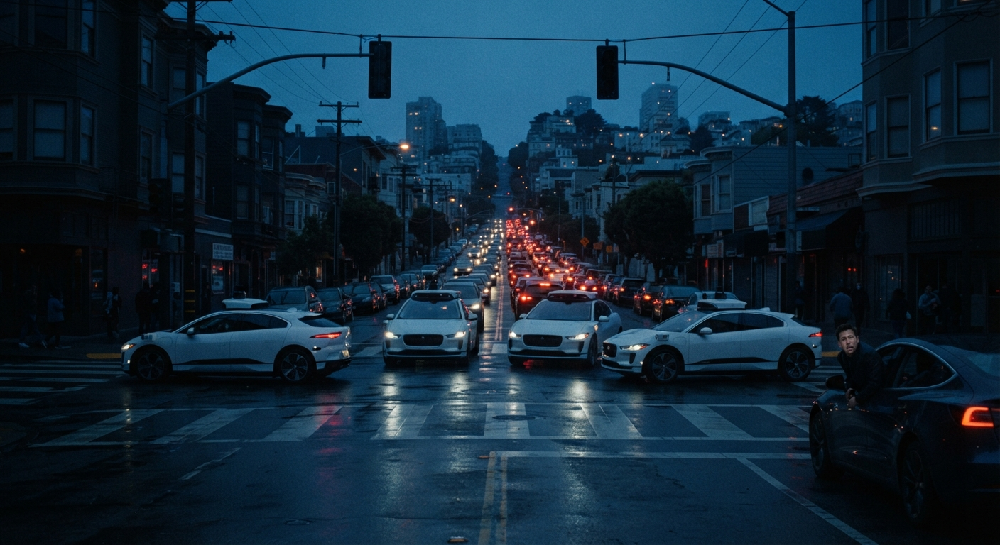

What Robotaxi Safety Numbers Can't See
Robotaxi crash rates keep falling. They miss gridlock and fleet-wide mistakes, and both grow as robotaxis take over more of the road.
DisclaimerThis is a personal take and impression, and may not fully reflect reality. All opinions are my own and do not represent those of my employer.

Waymo, Tesla, and others publish safety numbers that keep improving: fewer crashes per mile, fewer injuries per mile, and fewer insurance claims. Many people take these numbers as strong evidence that robotaxis are ready to scale.
I think the numbers are valid, but they do not show the whole picture. A crash rate counts crashes and nothing else. It does not count how often a car freezes at an intersection, how often a street is blocked, or how often a fleet makes the same mistake on the same day. Driving involves much more than collisions, including social norms that traditional safety metrics do not capture.
Two features of the current picture hide these costs, and both will grow as robotaxis take a larger share of traffic. The first is missing slack, and the second is correlated mistakes. Let's discuss these two in more detail.
1. Missing Slack
Human drivers quietly absorb a robotaxi's hesitation. They wait behind it, wave it through, and drive around it when it stops somewhere odd. At a four-way stop, one of them just goes. This is what I call human slack. It costs a few seconds and almost never ends in a crash, so it never shows up in crash statistics.
Take the humans away and the slack disappears. In August 2024, Waymos in a San Francisco parking lot honked at each other through the night. In another incident, when a power cut darkened traffic lights across a third of San Francisco in December 2025, Waymo says its cars crossed more than 7,000 dark signals, yet five of them ended up blocking each other at one junction and the fleet was pulled off the road for the day. In 2022, a group of Cruise robotaxis stalled together and blocked a street for hours. There were no crashes in any of these, only gridlock, and mostly between the robots themselves.
Humans break these ties in several ways at once. They are different from each other, so one is usually a bit more assertive or a bit quicker. They can signal, so a wave or a moment of eye contact settles who goes. And they can reason through a situation they have never seen before, instead of falling back on a fixed rule. Two copies of the same software have little of this. They see nearly the same situation, apply the same rule, and wait. Then they do it again.
2. Correlated Mistakes
In December 2023, a Waymo in Phoenix hit a pickup truck that was being towed backwards across a lane. Minutes later, a second Waymo hit the same truck. Same software, same wrong prediction, two crashes. In late 2025, the Austin school district documented 19 cases of Waymos passing stopped school buses.
Human mistakes are mostly independent. Say a rare situation fools 1% of drivers, and 1,000 drivers meet it on a given day. You get about 10 mistakes, give or take 3, and 50 is practically impossible. A thousand robotaxis on the same software can also average 10 mistakes, but no actual day looks like that. Either the software handles the situation and nobody fails, or it doesn't and every car that meets it fails. A per-mile crash rate looks identical in both worlds.
The flip side is that a fleet can be fixed at once. Waymo started rolling out a fix nine days after the towed-truck crashes, which no one can do for human drivers. The risk lives in the window before the fix lands, and the bigger the fleet, the more cars pass through that window.
One Root Cause
Both problems have the same root. Robotaxis are far more similar to each other than human drivers are. In today's traffic this similarity is hidden, because humans break the ties and a shared gap is hit a handful of times rather than thousands. As the share of robotaxis grows, more ties are between two robotaxis and more cars share each gap. A per-vehicle crash rate measured in human traffic sees neither effect.
The Obvious Objections
A company can coordinate its own fleet centrally. Policies can be trained against copies of themselves, as Gigaflow did in simulation. Ties can be broken with a little randomness in how long a car waits, as Ethernet has done since the 1970s. All of this is true, but it stops at the company boundary. A Waymo, a Tesla and a Zoox at the same intersection share no software, no communication channel and no training data about each other.
What Shall We Measure Then?
I think we should revisit what we measure. Crash rates are important, but they are not the whole story. For a society that self driving cars and robotaxis have a significant share of traffic, we should also measure:- Gridlock, not just crashes: how often a car is stuck for more than a minute or blocks an intersection.
- Robotaxi-vs-robotaxi encounters, reported separately, including other companies' cars.
- Fleet-wide events: how many cars hit the same software gap before it was fixed, and how long the fix took.
- Tests at high robotaxi share, where most of the other cars are robotaxis rather than replayed human traffic.
Today's numbers say a robotaxi among humans is a careful driver, and I think that is true. But they cannot say what happens when the humans who wait, who compensate for strange behaviors of a robotaxis, who wave and brake ties are no longer there.
Crash rates describe a single robotaxi. Gridlock and shared mistakes belong to the fleet, but our metrics do not measure the fleet, or how its behavior changes the social norms that everyone on the road relies on.